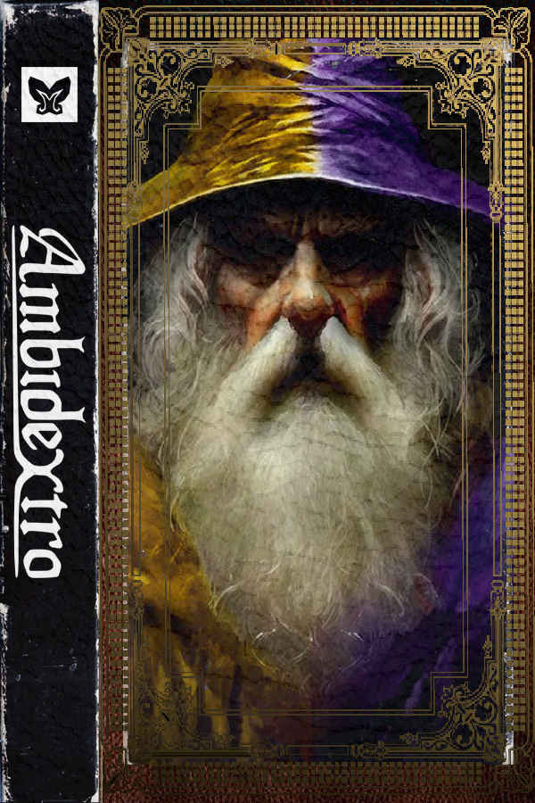

Ambidextro
Every archived year-end list appearance, including placement and points earned.
About the Game
A witch has kidnapped the prince and the princess. As the royal wizard, you have been severed in half so you can go rescue both at the same time, but first you’ll need to learn to control the two halves of your body simultaneously.With a series of quick single-screen platforming levels, Ambidextro will help you master controlling two characters at once, one with each hand. Learn to split your focus and tackle increasingly challenging levels you would have thought impossible.· A multi-player game for a single player.· Control one character with each hand.· Make your two-halves meet before the time runs out.· 100 levels to conquer.· Retro dark-fantasy atmosphere with a dungeon synth soundtrack.
| Released | 2025-03-28 |
|---|---|
| Developer | Majorariatto |
| Publisher | Majorariatto |
| Genres | Action, Indie |
| Platforms | Linux, macOS, PC |
SingleplayerSteam AchievementsFull controller supportSteam CloudAtmospheric2DDifficultPixel GraphicsControllerRetroDark FantasyMedieval
Where to Buy
Game information provided by RAWG.
Points by Year
List History
| Year | Source | List | Placement | Points |
|---|---|---|---|---|
| 2025 | Forbes | The 20 Best Games Of 2025 | 12 | 3 |